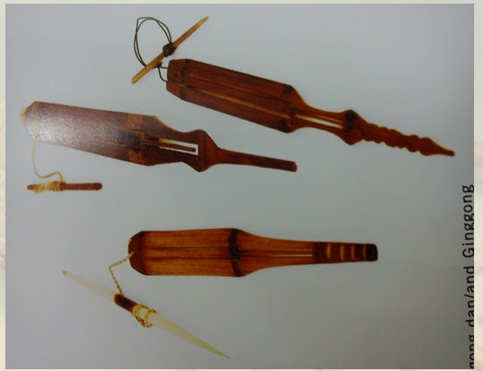
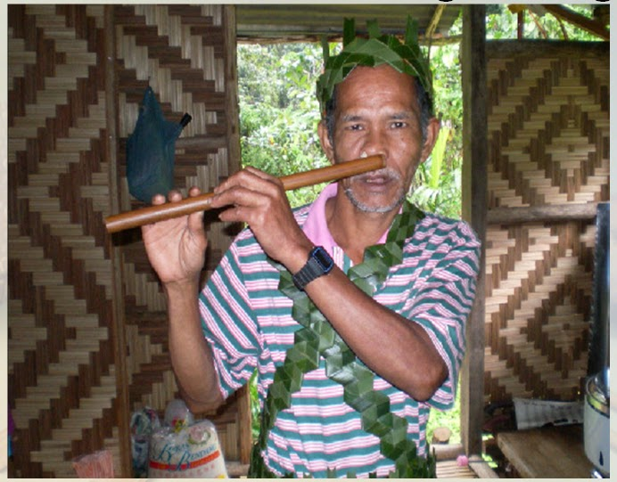

The size of the bamboo influences the sound produced by this musical instrument, which is created by knocking bamboo. It is commonly utilised as the main musical instrument in the native community
Ginggong
This ginggong is made from the bark of bertam leaves or bamboo. This ginggong is plucked on the one string attached at the end of its body. It creates sound similar to insects or animals.


Seruling Hidung(Pensol)
Temiar Native Community utilize pensol musical instrument to create sound using their nose.